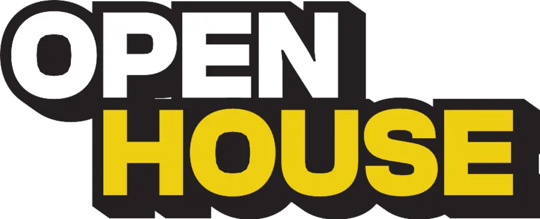
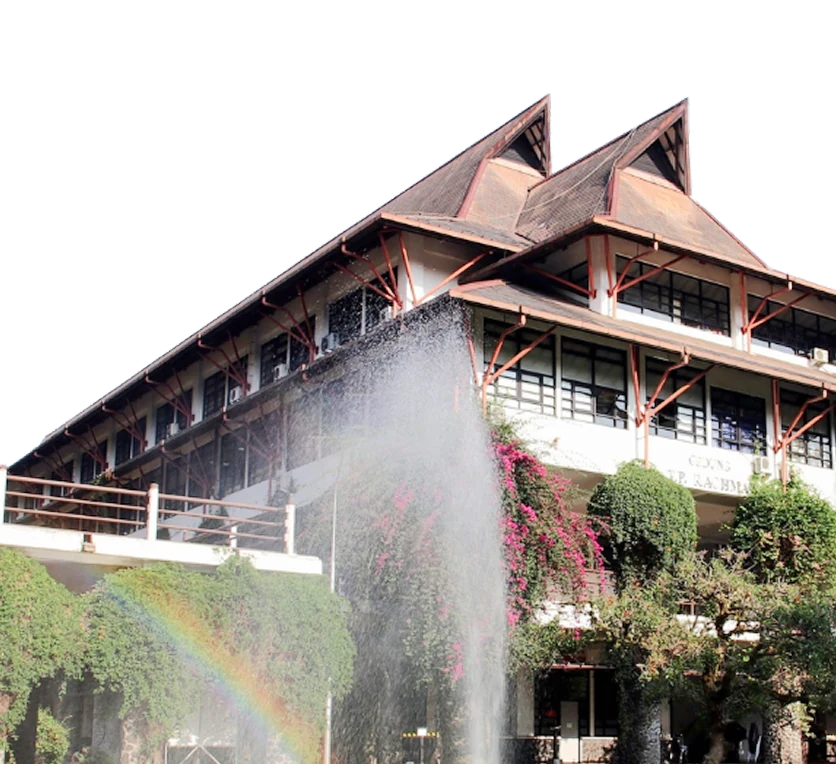

Akademisi ITB
Dr. Dina Dellyana, MBA., CIM
Assistant Director of Program Implementation — Directorate of Professional and Continuing Education
Institut Teknologi Bandung

Untuk Managers & LeadersPelajari cara AI dan data membantu pemimpin mengambil keputusan, dari perspektif akademisi Institut Teknologi Bandung dan praktisi industri.
Selasa, 29 September 2026
19.00–21.00 WIB
Online via


In collaboration with
Institut Teknologi Bandung
Assistant Director of Program Implementation — Directorate of Professional and Continuing Education
Institut Teknologi Bandung
Head of Business Process — ex-Bank Jago
Sunday
Dampak AI pada pekerjaan dan peluang untuk fokus pada kreativitas serta pemecahan masalah.
Cara memilih tools AI yang benar-benar membantu & bukan sekadar tren.
Prinsip berpikir kritis saat memakai data dan AI untuk keputusan penting.
Contoh penerapan AI untuk menyusun prioritas dan merencanakan langkah tim.
Bukan bersandar pada intuisi saja, atau menunggu laporan yang datang setelah momennya lewat.
Supaya tetap relevan saat cara kerja tim dan ekspektasi bisnis berubah karena AI.
Sesi ini memetakan mana yang layak kamu pelajari lebih dulu, dan mana yang bisa menunggu.
Selasa, 29 September 2026
19.00–21.00 WIB
Online via